Designing with empathy, delivering with clarity.
Hi, I’m Sara — a multidisciplinary UX Designer who blends research, design thinking, and creativity to design intuitive and accessible user experiences.
A research-driven, human-centered design process
Discover
Immerse in the problem through user research, interviews, and context.
Define
Synthesise insights into personas, journeys, and a sharp problem statement.
Design
Shape structure into intuitive flows, wireframes, and polished, accessible UI.
Validate
Test with real users and iterate on what the evidence shows.
Measure
Track impact against user and business metrics, then refine over time.
Creating Experiences That Matter
Hi, I’m Sara.
I’m a multidisciplinary UX Designer who enjoys solving problems at the intersection of user needs and business goals. Alongside my UX practice, I’ve explored Customer Experience (CX), which has broadened my perspective beyond individual interactions to the end-to-end customer journey.
By combining user empathy with an understanding of business processes, I strive to design experiences that create value for both customers and organizations. My approach is rooted in Design Thinking, blending research, strategy, and creativity to transform complex challenges into intuitive, impactful solutions.
Where I learned the craft
B.Des in User Experience
AI-led Innovation Certification
Where I’ve shipped
UX Designer
- Design end-to-end product experiences, from research through polished UI.
UX Intern
- Supported UX research and interface design across product features.
UX Intern
- Contributed to design explorations, prototyping, and usability testing.
Tools I reach for
What I bring to a team
Say hello
Tell me a little about your project or role. I usually reply within a day or two.
Selected work across craft.
UX case studies, visual design, and a sketchbook of illustration work — pick a lane.
Illustration is where I started — a hobby that grew into commissioned work. A few favourites, with the tools behind them.
TinyTots Hub: AI-Powered Childcare Platform for Parents & Daycare Providers
An AI- and IoT-powered platform that keeps parents connected to their child's daycare day — real-time updates, developmental insights, and intelligent support for parents and providers alike.
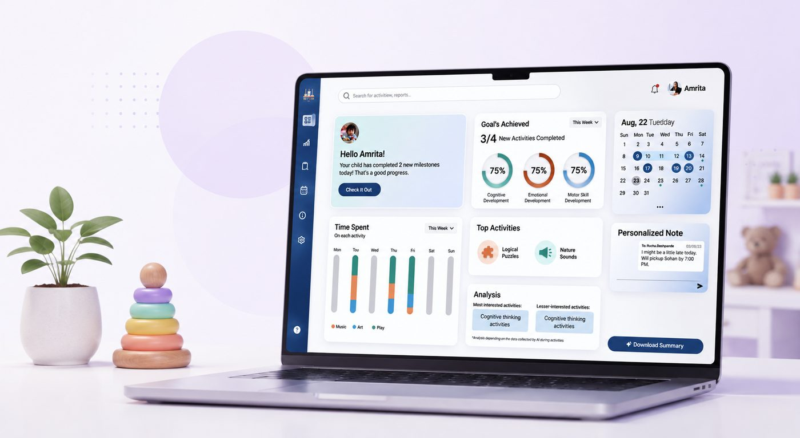
The challenge & the solution
The challenge
Parents often struggle to stay connected with their child's daily experiences at daycare, relying on fragmented updates and limited visibility into their development.
The solution
TinyTots Hub leverages AI and IoT technology to deliver personalized developmental insights, real-time activity updates, and intelligent support for parents and daycare providers — creating a safer, more connected childcare experience.
Context & users
Industry
Childcare & EdTech — an AI- and IoT-powered daycare platform.
Users
Working parents and daycare providers who need transparent, real-time communication.
Business context
Visibility and trust drive daycare retention — scattered updates push parents to consider switching.
Challenges & constraints
Fragmented updates, safety and privacy concerns, and blending AI/IoT into a warm, human experience.
A research-led foundation
Discovery paired secondary research across child development and emerging technology with primary interviews, then synthesised everything into insights, an AI-assistant concept, and the information architecture.
Secondary research
Literature review (15 articles), child-development research, and existing tech — AI, IoT, VR, AR, smart learning — plus opportunities & challenges.
User interviews (3 parents)
Existing communication systems, user goals, journeys, and needs.
Key insights
Problem statement, opportunity areas, and design goals.
AI assistant concept
Feature brainstorming, personalized experience, smart monitoring, and feature prioritisation.
Meet the parent
Priya, a working parent, wants a good daycare experience for her son and herself. Her day runs: drop-off → worry all day → scattered updates → considering switching.
Riddhi Sharma
Location: Pune
Education: MBA
Personality
Apps
About
Riddhi is a dedicated working parent who places a high priority on her children's well-being and development. As a marketing manager, she has a demanding job that requires her to balance her professional responsibilities with her family life. Riddhi values her career but also wants to ensure that her children receive the best care and support, especially during their time at daycare.
Goals
Motivation
Frustrations
To drop her son at daycare on time
Trigger: Wakes up early and starts completing the household chores and getting ready.
Drops her son at daycare and goes to her office
Feels guilty for leaving her child and is concerned about his safety
Gets notifications about her son's activities after every 2 hours.
It can sometimes be distracting to receive messages constantly.
Calls the day care staff during lunch break to check on her son as he was ill till yesterday.
Asks them to let him relax today and keep her updated about his today's sleep schedule.
Again receives lots of calls from them for the updates
A good daycare experience for her child and for herself
Trigger: She starts looking for some other daycare which will have a better communication and tracking system.
She looks on different websites, but none of the daycares have a good tracking system or a personalized care for her child.
She starts inquiring people around her for a good daycare.
Primary persona — Riddhi Sharma, 34, Pune · MBA · married. Hardworking, tech-savvy, and a multitasker. Goals: monitor her child's development, transparent daycare communication, and quality care. Frustrations: a demanding job, few insights from staff, communication gaps, and the overwhelm of balancing work and parenting.
User flow & information architecture
- Activities
- Attendance
- Calender
- Add / View
- Personalized Note
- View / Add
- Save
- Filters
- Timeline
- Drop off / pick up
- Download
- Notification
- Notification Tone
- Customized Alerts
- Set Alert Tone
- Themes
- Select Activity
- Logout
- View By (Timeline)
- Development Type
- Photos / Videos
- Details / Summary
- Download Summary
- View By (Timeline)
- Development Type
- Photos / Videos
- Details / Summary
- Download Summary
- View By (Timeline)
- Development Type
- Photos / Videos
- Details / Summary
- Download Summary
- View By (Timeline)
- Development Type
- Photos / Videos
- Details / Summary
- Download Summary
- Kid
- View / Edit Details
- Upload Documents
- Sleep Time
- Meal Time
- Parent
- View / Edit Details
The AI-integrated smart-toy loop
Infant interacts with the AI smart toy.
Mic + voice recognition capture verbal responses.
Smart toy records the interactions.
AI extracts patterns, emotions and trends.
Camera captures reactions; screen shows images.
NLP helps interpret the infant's responses.
AI generates charts, graphs and analysis.
Results shown on a friendly dashboard.
Dashboard gives an overview over time.
A soft, friendly, trustworthy palette
Built for a childcare & AI-powered platform — approachable colour with clear semantic roles for actions, success, insights, and alerts.
The product, in a nutshell
Interactive demo
A placeholder for the clickable prototype — drop your Figma or Framer embed here so visitors can walk the flow.
All UX work
Sketchbook
Saral Pay: A voice-first digital payment companion
Helping users with limited digital confidence — especially retired and older adults — make online payments independently, confidently, and securely, without fear of mistakes or needing help from others.
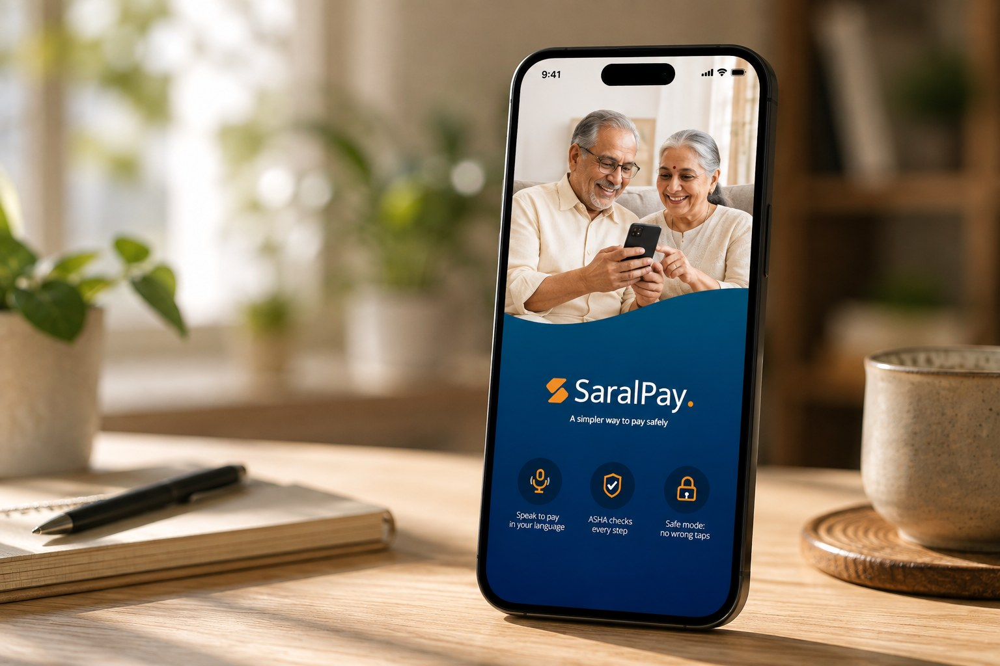
Today's online payment situation in India
2016: a mainstream shift
UPI became the backbone of everyday payments in India — huge monthly volumes, broad bank connectivity.
Literacy & comprehension gap
Literacy (age 7+) is 80.9% — nearly 1 in 5 may struggle with written information; financial & digital literacy is often lower.
Retired & older users
~153M Indians were 60+ in 2022, rising to ~347M by 2050 — not an edge case in financial design.
Digital access vs ability
85.5% of households own a smartphone and 86.3% have internet — yet many lack the skills or confidence to transact alone.
Gender & geography
Internet use runs from 57.6% (rural women) to 85.5% (urban men) — interfaces must bridge language and exposure gaps.
Trust & safety
Fraud rose 10× to 2.8M cases by 2025 (~₹23,000 cr lost), prompting new RBI safeguards.
The scale of the opportunity
Mapping against competitors
Benchmarked against the leading Indian payment apps — Google Pay, PhonePe, BHIM, and Paytm — to understand where confidence and reassurance are under-served.
Feature Benchmarking Against Current Indian FinTech Apps
| Feature | Google Pay | PhonePe | Paytm | BHIM |
|---|---|---|---|---|
| Voice-Led Onboarding | ✗ | ✗ | ✗ | ✗ |
| Step-by-Step Guided Setup | ⚠ Basic | ⚠ Basic | ⚠ Basic | ⚠ Basic |
| Practice Mode (Dummy Transactions) | ✗ | ✗ | ✗ | ✗ |
| Explain Before Action | ⚠ Limited | ⚠ Limited | ⚠ Limited | ⚠ Limited |
| Emergency Help Button Throughout Journey | ✗ | ✗ | ✗ | ✗ |
| Voice-Based Navigation | ✗ | ✗ | ✗ | ✗ |
| Scam Detection & Reassurance Layer | ⚠ Alerts Only | ⚠ Alerts Only | ⚠ Alerts Only | ✗ |
| Confidence-Building Journey | ✗ | ✗ | ✗ | ✗ |
| Low-Literacy Focus | ✗ | ✗ | ✗ | ⚠ Partial |
| Trust-First UX | ⚠ Secondary | ⚠ Secondary | ⚠ Secondary | ⚠ Secondary |
| Error Recovery Guidance | ⚠ Customer Support | ⚠ Customer Support | ⚠ Customer Support | ⚠ Customer Support |
| Digital Literacy Support | ✗ | ✗ | ✗ | ✗ |
What we observed
Survey · 17 participants
4 age groups · 11 users · 6 non-users.
11/17 (65%) already use payment apps, yet 5 rated confidence only 3/5 — usage ≠ confidence.
9/17 (53%) were 60+, making older adults a key user group.
Top concerns: sending to the wrong person (6) and fraud/scams (5) — fear of irreversible mistakes.
On a failed transaction, 7 would ask someone and 7 would contact care — heavy dependence on support.
Ease of use (7) was the biggest factor in choosing an app, then speed (4).
6/17 (35%) still don't use apps — prefer cash, don't know how, or no smartphone.
In-depth interviews
Users link digital payments with risk, not convenience — hesitant to start on their own.
They seek reassurance before financial actions, especially at confirmation.
Confidence drops with unfamiliar terms or many decision points — they pause or abandon.
They prefer learning through guidance and demos over reading instructions.
Trust builds through familiarity; one bad experience discourages future use.
They want to be self-reliant — but only if the journey feels safe and predictable.
What the research told us
Build confidence, not just access
Users already have smartphones and understand technology. The real barrier is confidence while handling money.
Reduce fear through reassurance
Fear of irreversible mistakes causes hesitation and task abandonment.
Promote independent decision-making
Users frequently depend on trusted family members for financial tasks.
Trust, confidence & control
Trust
Users understand their money but fear making irreversible mistakes in unfamiliar digital payment flows.
Confidence
Clear payee details, predictable steps, visible payment status, warnings and recovery options are more reassuring than generic security messages.
Control
Users need a personalised experience with familiar payments, fewer options and optional guidance that supports independence without taking control away.
Persona, empathy & journey
Persona, empathy map, scenario and current-state journey map for a cautious, retired user.
Persona
Rajesh Verma
The TraditionalistOccupation: Retired Government Employee
Location: Delhi
Rajesh is financially disciplined and values control and clarity in money matters. He is comfortable using a smartphone for basic tasks but avoids digital payments due to perceived risk. His environment allows alternatives (bank, post office), so he chooses safety over convenience.
Personality
More about Rajesh
Tech & literacy
Motivations
Goals
Quotes
Challenges
Painpoints
Empathy map
DOES
SAYS
THINKS
FEELS
User journey map
Scenario
Rajesh wants to send money to his grandchildren for their birthday. Since they live in a different city, he wants to transfer using a online payment app, but he feels unsure because he has never relied on online transfers before. Although he uses his smartphone for basic tasks like calls and WhatsApp, he worries about scams, wrong entries, and whether he can complete the process without help.| Stage | Awareness | Consideration | Decision | First use stage | Ongoing adaption |
|---|---|---|---|---|---|
| Goal | Learn digital apps can send money easily and wants to send to his grandchild | Evaluate whether it is safe and worth trying Mentally compares with cash-based processes | Install app and prepare first transfer. | Successfully send small test amount to grandchild without any mistake. | Build habit for regular use. Use digital transfer with more confidence and less dependency. |
| Action | Observes others using apps but does not engage Ignores promotional messaging | Asks multiple people (family/friends) for validation | Checks details carefully, download app and link bank hesitantly. Avoids doing it alone | Opens the app, enters grandchild's number, and attempt to transfer ₹100. Calls to check if they have received | Repeats the process for future transfers with less help. |
| Touchpoints | TV/social media ads, conversations with peers and family, facebook | Son explaining steps App store / onboarding previews | OTP messages (confusing) PIN setup Bank linking steps | QR code scanning; Contact selection list; Confirmation screen; PIN entry | UPI app, saved contacts, reminders, transaction history, customer support. |
| Belief | I am more used to going to banks to make payments. These apps are meant for younger people | More steps means more chance of mistake. If I don't fully understand, I shouldn't try. If something goes wrong, there will not be anyone who can help me fix it | Once I enter PIN, it's final This is a risky step | Enters grandchild's number, sends ₹100. I cannot undo this I must be 100% sure before proceeding | I can manage this now if the process stays simple. |
| Current emotions | Defensive mindset Slight resistance to change | Anxious and hesitant. Trust conflict (convenience vs safety) | Nervous Low confidence Fear of irreversible mistakes | Tense and second-guessing. | More relaxed and slightly proud. |
| Future emotions | Mild curiosity if trust improves | Tentative hope if guided properly | Slight confidence if first attempt succeeds | Relieved accomplishment. Fear persists despite success | Independent and trusting |
| Painpoints | Negative exposure bias (hears more scams than success stories) Lack of understanding of how digital money works | Cannot visualize the flow of money. Too much dependency on others for learning. Lack of confidence in own ability | Complex KYC or verification steps lead to abandonment. No safe environment to practice Fear- doing something wrong w/o realizing | Similar names create confusion Lack of strong identity confirmation (recipient trust) No visible "safety net" or undo Cognitive overload | Still worried about scams or errors if process changes. |
| Opportunities | Show real users like him succeeding safely Replace "fast/convenient" messaging with "safe and controlled" Explain how digital money works in simple visual terms Use regional language storytelling (video/demo) | Provide step-by-step preview before using Offer guided tutorials (voice + local language) Show what happens if something goes wrong (recovery flow) Introduce "practice/demo mode" before real money use | Create "assisted onboarding mode" (guided step-by-step) Simplify OTP explanation ("this is to verify you") Add progress indicators ("Step 2 of 4") Provide reassurance messaging at every step Allow family-assisted setup flow | Show recipient name prominently and clearly Provide undo/delay window perception Add confidence cues ("Safe transaction", "Verified user") Reduce clutter → focus only on essential steps Enable "slow mode" for first-time users (no rush UI) | Simplify transaction history ("Sent", "Received", "Not completed") Provide clear status explanations (no jargon) Offer one-tap help/support Reinforce confidence with positive feedback ("You did it correctly") |
UX strategy, ethics & flows
Feature brainstorming generated eight core ideas, each aimed at lowering fear and raising confidence:
Voice-led onboarding
Guided voice-based setup.
Voice-based navigation
Hands-free app navigation.
AI payment companion
Real-time payment guidance.
Explain before action
Clear step explanations.
Practice mode
Risk-free payment practice.
Emergency help button
Instant support access.
Scam detection assistant
Fraud warning alerts.
Safety mode (smart shortcuts)
Personalised quick actions.
Strategy & UX flow · persuasion tools
Framing
Allow users to make fast decisions
Attentional bias
Help understand immediate actions and grab attention
Discoverability
Discover useful features quickly
Miller's law
Reduce cognitive load because the dashboard would be information-heavy — keep 7±2 items in working memory
Affect heuristics
Predict relevant data and alerts for managers based on their area of interest and priority
Placebo effect
Create positive conditioning for actions performed and alerts / actions required
Availability heuristics
Real-time data and alerts in first view, with the ability to drill down if required
Confirmation bias
Features to provide confirmation about the data
Visual anchor
Features to guide priority actions
Signifiers
Colors and indicators to communicate what users need to do first
Temptation bundling
Gamification or leadership dashboard to encourage users to keep using the platform and keep motivation high
Hawthorne effect
Live tracking and user tracking to ensure on-time deliveries and driver performance
Nudge
Hints, notifications and reminders on the driver and manager side
Pseudo-set framing
Tracking of drivers or group efforts
Feel-good principle
Positive conditioning through gamification and reward system
Hick's law
Progressive decision and action alerts to avoid overwhelming users
Curse of knowledge
Build clear communications and expectations between driver and manager
Variable reward
Gamification and leadership dashboard to provide rewards, or kudos to drivers and/or managers
Labor illusion
Work recognition — task status when completed on time
Self-initiated triggers
Setting the deadlines for their own team (drivers)
Endowment effect
For both drivers and managers, create a feeling of ownership
Social proof
Show that similar users transformed their workflow
Moral luck
Shaping trust in the system based on outcomes, not just intentions or correct actions
The power of people we link
Word-of-mouth trust
Key features & error / recovery states
Splash screen — invite trust, security & approachability
Realistic, slightly-uncertain imagery of the user segments. A blue-teal palette signals calm, security and trust; orange accents add warmth and highlight key information.
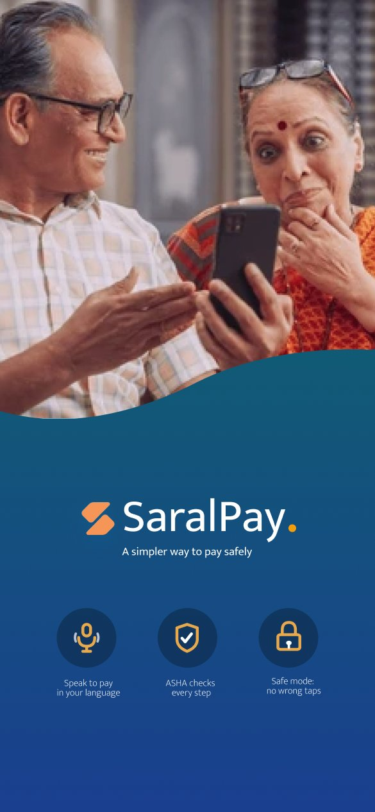
Onboarding — setting up a customised dashboard
Users personalise the app around the bills they pay and the people they trust. Controlled Payments limits transfers to trusted recipients to prevent accidental sends — and every choice is reversible.
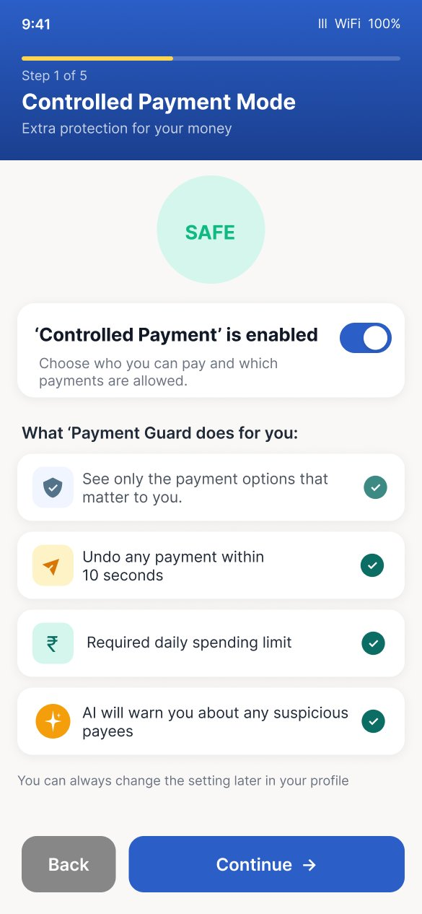
Dashboard — customised, gamified & easy access
Shows only relevant options, trusted recipients and frequent actions to cut complexity. A gamified progress bar rewards activity, with direct access to ASHA via chat or voice.
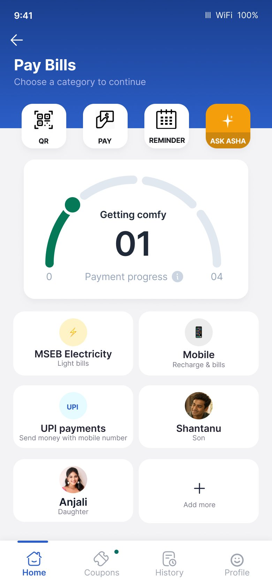
ASHA — AI support & help agent
A familiar chat/voice companion that guides each step with safety checks — but never decides for the user. Every critical action needs the user's approval, and ASHA flags how to protect sensitive information.
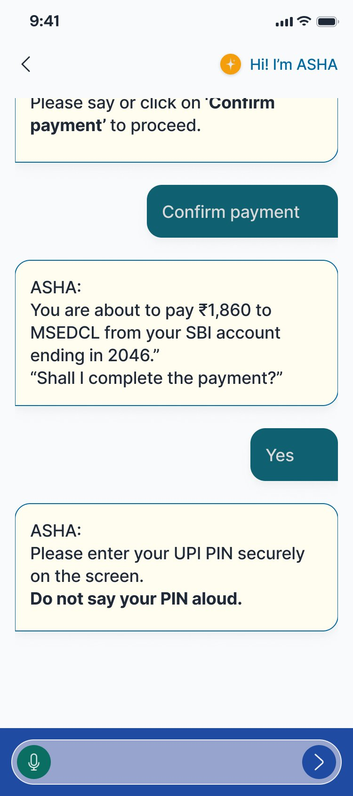
Usability testing
Moderated testing with 3 participants (55+, retired, new to online payments) using Figma prototypes and Lyssna. Tasks: onboarding with Controlled Payments, paying a bill from the dashboard, and paying a bill via ASHA.
| Business case | Usability testing focus | Business impact |
|---|---|---|
| Merchant onboarding | Simplicity, error recovery | Faster adoption |
| Transaction flow | Clarity, retry options | More completed payments |
| Rewards | Comprehension, trust | Higher engagement |
| Bill payments | Error handling, confirmation | Daily active use |
| Accessibility | Voice, icons, local language | Expanded user base |
Where users felt confident — and where they hesitated
The Bills Home screen performed best, with users quickly identifying the electricity-bill card and achieving the highest task success. The Controlled Payment screen created the most friction, mainly because the Safe Mode toggle was overlooked or misunderstood. The Welcome screen lacked a clear starting action, causing users to explore without direction.
Three main improvements:
Add a clear "Get Started" action on the Welcome screen.
Make the Safe Mode control more visible and understandable.
Reduce the prominence of "Ask ASHA" when it competes with the primary payment task.
Results
| Dimension | Participant 1 | Participant 2 | Participant 3 | Overall insights |
|---|---|---|---|---|
| SUS score | 77.5 (Good) | 76.25 (Good) | 65 (OK) | Avg 72.9 — above industry avg, below target 80 |
| Task success | 82–85% | 80–83% | 62–65% | Strong for A & B, friction for C |
| Time required | 5:08 min | 4:41 min | Longer | Longer onboarding for C |
| Key insights | Moderate onboarding | Efficient, minor friction | Struggled with onboarding, slower | AI assistant helpful; onboarding lengthy & dense |
| Recommendation | Simplify onboarding | Highlight CTAs | Simplify language | Aim for SUS ≥ 80, emphasize AI-assistant role |
What went well
"Payment Guard" made users feel safe and in control · trusted payees & selected billers reduced fear of mistakes · the electricity-bill flow was simple to follow · showing bill amount & due date increased confidence · OTP, PIN, confirmation screens and fraud alerts felt reassuring · the undo-payment option gave extra confidence · ASHA helped guide new or hesitant users · ASHA's chat support was preferred (readable at the user's own pace) · the "baby steps" idea was well received.
Recommendations
Continue simplifying onboarding · reduce content density, keep it minimalistic · make onboarding more guided · use CTAs as progressive disclosures to eliminate surprise · lean on the AI agent to keep the platform engaging · emphasise AI chat over voice (users type ahead and validate before sending) · give access to previous bills for comparison · keep simplifying the language.
Common finding: users liked ASHA's AI guidance; onboarding felt slightly lengthy.
From problem statement to solution
Problem statement
Low-confidence users feel uncertain paying online alone — afraid of mistakes and losing control.
Design direction
Prioritise visibility, confirmation and control — see details, verify before confirming, choose your level of AI help.
Reassurance worked
Payment Guard, confirmations, fraud alerts, OTP/PIN and a 10-second undo gave users time to review and recover.
Positively received
Participants valued the "gradual steps" idea — trusted payees and guided bills felt approachable.
Future improvement
Shorten & guide onboarding, clarify CTAs and language, favour chat over voice, and add access to past bills.
Key takeaway
Cautious users don't need fewer capabilities — they need clearer information, reassurance and control.
Interactive demo
A placeholder for the clickable prototype — drop your Figma or Framer embed here so visitors can walk the Saral Pay flow.
TinyTots Hub
All UX work
StreetEats: An app connecting people with food hawkers
Hawkers are an integral platform of urban economies. But due to no fixed place, they lose their customers. People aren't aware about other hawkers in the city. Even the government isn't able to keep a track of their location. Therefore, a platform that provides information about them.
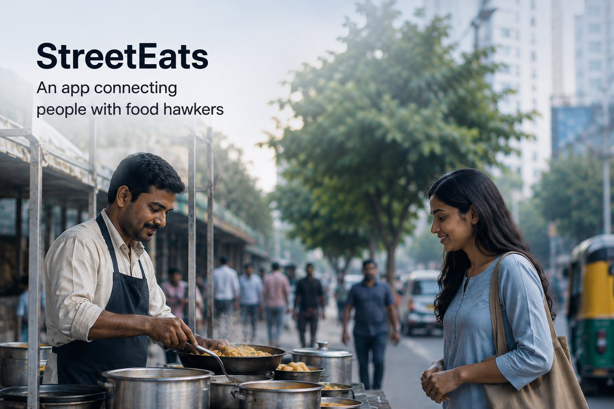
Problem statement
Hawkers have irregular placement, which causes them to lose customers and makes it difficult for the authorities to monitor their movements.
Who
Hawkers
What
Not able to reach wider audience
Where
On the street
When
No awareness about them
Why
No platform to connect hawkers with customers
Brainstorming & mindmapping
Technology
Opportunities
Systems
Problems
Primary & secondary research
Primary research
Online Survey · Interview
Secondary research
Literature Review
Goals, deliverables & constraints
Project goals
The goal of this project is to create a platform that will facilitate the connection between customers and hawkers in order to provide an efficient and reliable service for both parties.
Project deliverables
The project's final product will be an app that helps in tracking hawkers' precise locations, provides information about the various food hawkers in the city and about the hawker's zone.
Exclusions & constraints
Less familiarity with technology, poor network in some places, and language barrier.
Assumptions
Food hawkers use smartphones. They have an understanding of how to install and operate any app.
Framing the approach
Executive intent
App will focus both on hawkers and the customers. Sellers can list themselves on the app and provide their information through which customers can reach out to them, give ratings and share it.
Target audience
People who likes to have street food and Hawkers who wants to expand business.
Technology constraints
Network, smartphone.
Competitors
Direct: Hawker street vendors near me. Indirect: Near Me — Find places around me, Zomato/Swiggy.
Tasks — for sellers
Create account, add information, add location, list food items.
Tasks — for customers
Add location, choose category, add filters, book in advance.
User scenario
Riddhi Sharma
Location : Sangli
Education : M.Tech
Personality
Apps
About
Riddhhi, a 24-year-old M.tech student lives in college hostel. She has an extremely hectic schedule, which causes her to occasionally miss the food from mess. She is someone who enjoys eating and trying food from different places. Since she's a college student and cannot afford to visit expensive restaurants frequently, she prefers street food.
Goals
Motivation
Frustrations
Think
Feel
Say
Do
User Scenario
24-year-old M.Tech student Riddhi resides in the hostel. She has classes from 8:30 in the morning until 5:30 in the afternoon. Due to inconsistent lecture timings, she occasionally forgets to eat in the mess and ends up eating outside. She typically prefers to eat from her regular food hawkers that offer affordable, high-quality meals. But she has a hard time finding them because of their unexpected locations. She wishes there was an app that could have made the whole thing simpler.| Phases of journey | Attending Lectures | No Mess Food | Good Quality Food outside | Searches for the regular hawker | An app! |
|---|---|---|---|---|---|
| Actions | Wakes up early morning; Reaches college by 8:20AM | Manages different lecture timings.; Misses mess food. | Decides where to eat; Goes out of the college. | Doesn't find the hawker in the same place.; Searches around in the area to look for him. | Comes back to hostel feeling disappointed; Searches for an app. |
| Users Thoughts | Fresh for the day. To learn something new. | Tired due to a hectic schedule and no food | Excited to go out and eat her favourite dish | Confused and irritated as not able to find the hawker | Disappointed as she couldn't find him. |
| People involved | Classmates; Roommate | Instructors | Mess Incharge; Friends | Food Hawkers; Passerby | |
| Planning | To write notes | To manage time according to the mess timings | To think of all the options where she could go and eat. | To look at the places where she might find the hawkers. | To look for an alternative solution |
Physical experience
Opportunities
A platform where hawkers and customers will be able to connect. Love location of the hawkers Nearby hawker zones will be available on the maps. Contact details, ratings and reviews Share it with friends. Hygiene marked. To book in advance
To understand the customer's point of view
Customer
Hawkers
- We have the best vadapav in the entire city
- You can/ cannot order in advance.
Teachers
- Extra classes today.
- Submit it before tomorrow's class.
Family
- How can you trust on the outside street food.
- Please have your food on time
Friends
- The Vadapav stall outside college looks good. Not sure about the taste
Mess Incharge
- You won't get food now. You should have come earlier
Food Hawkers
- Roams around to sell products
- Buying raw materials.
- Setting up the cart.
- Monthly salary to waiter.
- Issue hawker's license and sell only in hawker zone.
Cart
- With wheels so that the hawker can go to different places
Apps / Website
- Connecting hawkers with customers
Family/ Friends
- Provides support, both mentally and physically
- Support during hard times
- Gives suggestions and advices
- Motivates
Police
- Doesn't allow to wait at one point for too long
Competitors
- Motivates to do better
- Gets information about other places where these hawkers sell their food products.
Customers
- Motivates to do better
- Gets information about other places where these hawkers sell their food products.
- Asks for contact details
- Asks for menu
- Asks them to tell it to others
- Asks if they liked the taste
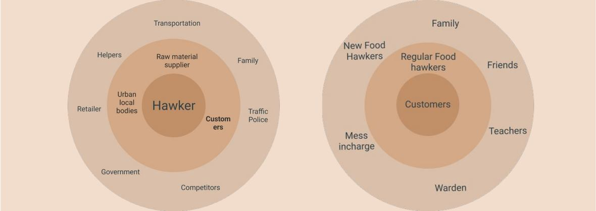
Direct & indirect competitors
Direct
Hawkers
Indirect
1. Near Me — Find places around me · 2. Swiggy · 3. Zomato
Direct — Hawkers
Indirect — 1. Near Me - Find places around me 2. Swiggy 3. Zomato
| Feature | Hawkers | Near Me - Find Places around me | Swiggy | Zomato |
|---|---|---|---|---|
| Onboarding hawkers | ✓ | ✓ | ✓ | ✓ |
| Hawkers live location | ✗ | ✓ | ✗ | ✗ |
| Order in advance | ✗ | ✗ | ✗ | ✗ |
| Near By hawkers | ✓ | ✓ | ✗ | ✗ |
| Ratings and reviews | ✓ | ✓ | ✓ | ✓ |
| Hawker's zones | ✗ | ✓ | ✗ | ✗ |
| Information about hawker's license | ✓ | ✗ | ✗ | ✗ |
| Total ticks | 4 | 5 | 2 | 2 |
Scenario
User wants to check details of the nearest food hawker who sells panipuri and is the most clean stall using the app.
- 1.1 Search on Playstore
- 1.1.1 Click on "Install"
- 1.2 Open the app
- 1.2.1 Sign Up/ Sign In
- 2.1 Under Cuisine, search "Chaat"
- 2.2 Add filters
- 2.2.1 Check "categories"
- 2.2.1.1 Select "Panipuri"
- 2.2.2 Click on "Others"
- 2.2.2.1 Select "Hygiene rating 4+"
- 2.2.2.1.1 Click "Apply filters"
- 2.2.2.1 Select "Hygiene rating 4+"
- 2.2.1 Check "categories"
- 2.3 Sort the options
- 2.3.1 Select "Distance"
- 2.4 Click on the button "Locate Hawkers"
- 3.1 About
- 3.1.1 Address/ Map
- 3.1.2 Facilities
- 3.1.3 Contact Details
- 3.2 Photos
- 3.2.1 Food
- 3.2.2 Ambience
- 3.2.3 Videos
- 3.3 Menu
- 3.4 Ratings and reviews
- 3.4.1 Click on the "Save" Icon
Card sorting & IA diagram
Settings
Explore
Customize
Profile
Dining
Help
- Sign Up Page
- Sign Up Using
- Or · Name
- Email Id
- Password
- Re-enter password
- Sign Up
- Re-enter password
- Password
- Email Id
- Sign Up Using
- Sign In Page
- Create Account!
- Sign Up
- Or · Using Credentials
- Email Id
- Password
- Sign In
- Password
- Email Id
- Using Google/ Facebook
- Create Account!
- Allow while using app
- Allow Once
- Don't Allow
- Map
- View Details
- View Details
- About
- Hawkers Zone
- Share
- Save place
- Schedule pickup
- View Details
- Location (Current/ Add/Change)
- Search Bar (mice/phone)
- Choose the food category
- Filter (Cusi, Category, rating)
- Sort By
- Language
- Hawkers near you
- View details
- save place
- Share
- save place
- View details
- Current location
- Add/ Change location
- Lets Explore
- Message
- Share
- View profile
- Like
- View profile
- Save Post
- + Add post
- Photo
- Video
- Description
- Video
- Add location
- Photo
- Edit profile
- Name, Address, Payment (option)
- Saved Places
- Settings
- Contact
- Previous orders
- Choose language
- Notification
- Contact
Moodboard & identity
This is an application that provides information about local food hawkers to customers and helps them explore different types of street food options in the city.
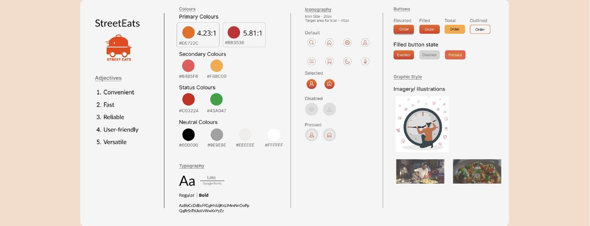
High-fidelity prototype
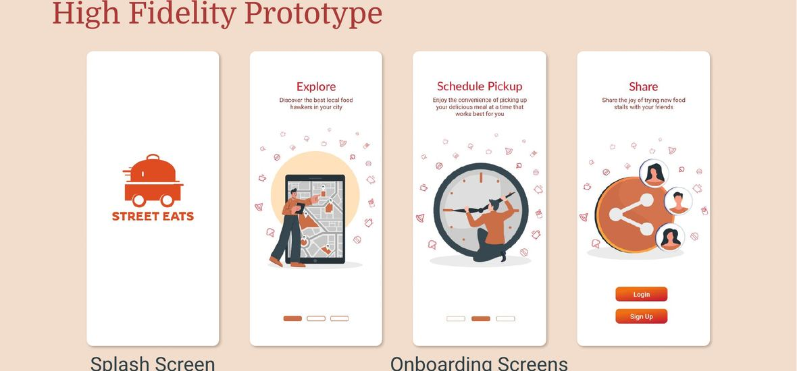
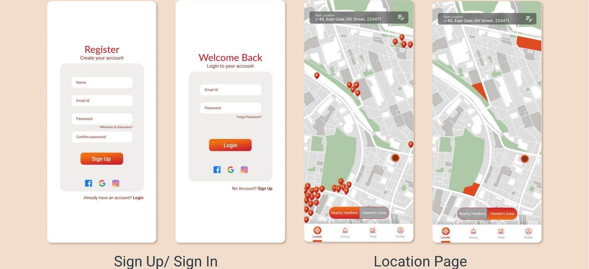
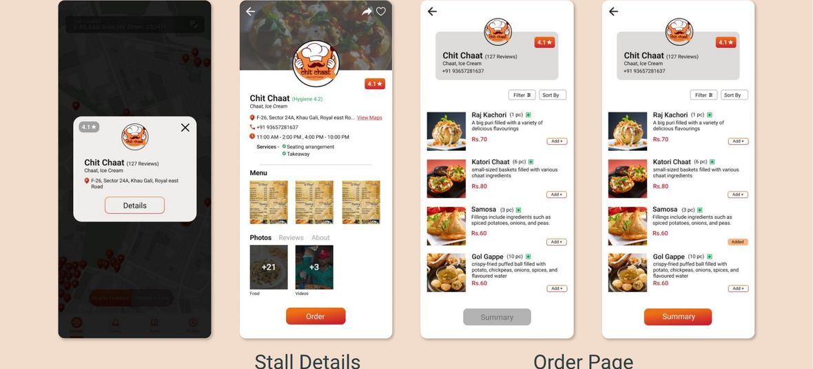
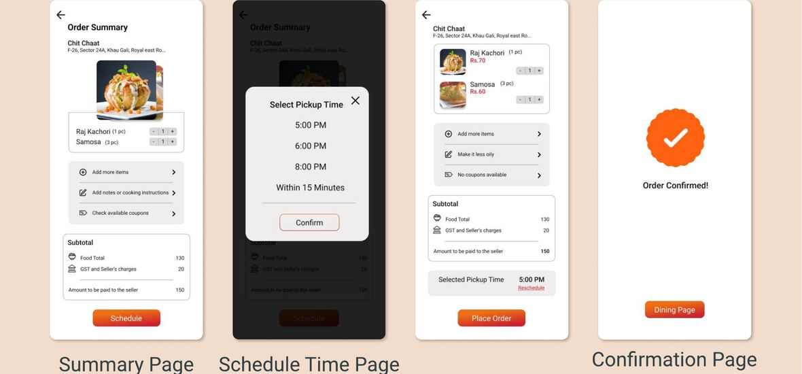

Interactive demo
A placeholder for the clickable prototype — drop your Figma or Framer embed here so visitors can walk the StreetEats flow.
Saral Pay
All UX work
Design system for an internal Adobe dashboard
A reusable component library and its foundations — built in Figma to bring consistency, speed, and clear documentation to an internal dashboard.
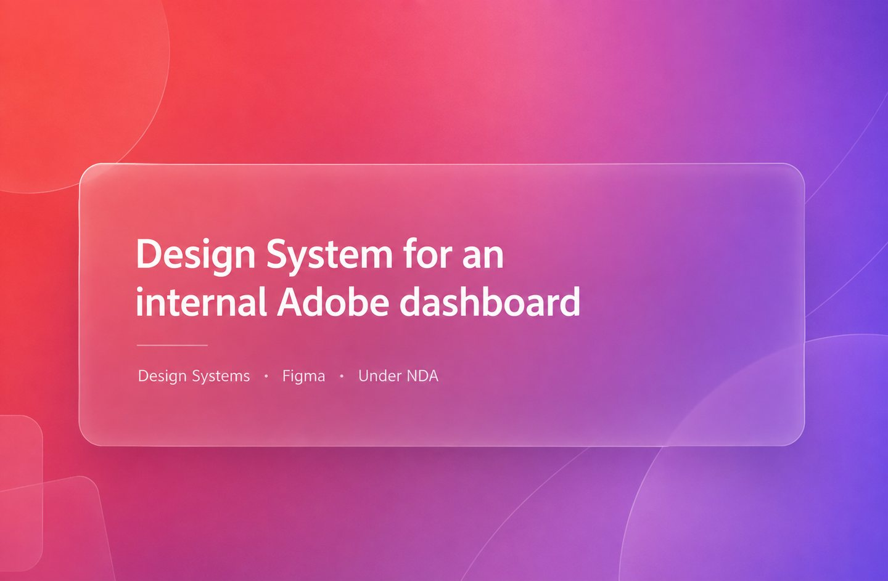
One source of truth for the dashboard
The goal was a single, well-documented system that teams could build from — consistent components, clear foundations, and guidance that made the right choice the easy one. It was created in Figma and handed off for implementation with engineering.
How the system came together
Discovery
Understand business goals, user needs, and project requirements.
Audit
Review existing designs to identify patterns, gaps, and inconsistencies.
Foundations
Establish core design elements like colors, typography, spacing, and grids.
Components
Build reusable UI components with consistent behavior and variants.
Documentation
Document usage guidelines, best practices, and implementation details.
Implementation
Collaborate with developers to translate the design system into code.
Six components, documented three ways
Each component was documented across three facets — anatomy, specs, and usage. Pick a component to explore what was covered.
The colour foundation — from a core palette to semantic tokens and state layers.
Core palette, semantic tokens, and interaction state layers, organised into a clear hierarchy.
Token names, light/dark values, and accessible contrast pairings for text and surfaces.
When to reach for semantic vs. base tokens, and how colour signals state, status, and hierarchy.
Primary gradient
For primary component & AI backgrounds and section headers only — applied sparingly. Not for KPIs, charts, status, or body text.
Grays — background (base layers)
Grays — foreground (buttons, icons)
Semantic / status
Status colours must always convey meaning — never used for section identity, navigation, or decoration.
Category colours (element / background)
Used in sequence for pillar/section headers, component backgrounds, and chart & diagram categories.
A full set of button variants with consistent behaviour across states.
Container, label, an optional leading or trailing icon, and the padding relationships that hold them.
Sizes, variants (primary, secondary, tertiary, and quiet), and every interaction state.
Choosing the right variant, keeping one clear primary action per view, and do / don’t pairings.
Button colour hierarchy & usage
- Use when all actions carry equal importance
- Serves as the standard button style in neutral decision contexts
- Use to emphasise one primary or recommended action
- Limit to one highlighted button per decision area / view
- Use for secondary or optional actions
- Keeps actions available without competing for attention
- Use only for AI icon and AI
Types of buttons
Text #FFFFFF
Text #FFFFFF
Text #A0A0A0
Text #FFFFFF
Text #000000
Menu container #FFFFFF + light shadow · item spacing 16px.
Hover row background #F1F1F1 · Selected item text is bold.
Charts and graphs tuned for dense, scannable dashboards.
Plot area, axes, gridlines, legend, labels, and the data marks themselves.
Supported chart types, categorical and sequential colour ramps, and density rules.
Matching the chart type to the data, labelling clearly, and keeping dashboards legible at a glance.
A flexible data table for scanning and comparing large sets.
Header, rows, cells, dividers, and supporting controls like sort and selection.
Density options, alignment rules, and states — hover, selected, sorted, and empty.
Scanning patterns, when to paginate vs. scroll, and handling loading and empty states.
Surface and elevation layers that give the dashboard depth.
Surface layers from base to raised, and the elevation that separates them.
Surface tokens across light and dark, and rules for how layers stack.
Establishing depth and grouping related content without adding visual noise.
Illustrative surface layers.
Wayfinding that keeps a complex dashboard easy to move through.
Global navigation, sections, items, and clear active indicators.
Structure, item states, and responsive behaviour across breakpoints.
Building predictable wayfinding, hierarchy, and quick access to key areas.
A shared language for building faster
The result is a documented, reusable foundation — colours, buttons, data-visualisation, tables, backgrounds, and navigation — that keeps the dashboard consistent and gives designers and engineers a shared language to build from.
StreetEats
All UX work
NAVITRAX: A fleet management platform
A fleet-management platform built to move managers from uncertainty to confidence — real-time visibility, smarter decisions, and better outcomes. Your fleet, in your control, always.
From uncertainty to confidence
NAVITRAX helps fleet managers stay ahead of their operations. Instead of firefighting from scattered spreadsheets and delayed updates, it offers real-time visibility, live tracking, AI analytics, and instant alerts and notifications — so managers can make smarter, timely decisions and keep operations running smoothly.
Meet Harpal
Harpal is a 48-year-old truck fleet manager. His goals: track fleet movement, reduce fuel costs, and monitor driver behaviour. His pain points include difficult agricultural terminology and inaccurate weather and crop predictions.
Harpal Truck Fleet Manager
48, male
Track fleet movement
Reduce fuel costs
Monitor driver behavior
Difficult agricultural terminology
Inaccurate weather and crop predictions
Scenario
Harpal manages logistics through a dashboard but struggles with delayed alerts and poor data interpretation.
UX Problems
- Complex fleet dashboards
- Difficult report generation
- Poor alert prioritization
- Multi-device inconsistency
UI Problems
- Information overload
- Small charts and graphs
- Weak visual hierarchy
- Non-intuitive controls
CX Problems
- Distrust in tracking accuracy
- Operational stress
- Frustration from delayed insights
- Weak support responsiveness
AI Problems
- Inaccurate predictive maintenance
- Weak route optimization
- False anomaly detection
- Poor driver risk assessment
Empathy map
What Harpal says, thinks, does, and feels — the emotional reality behind the operational one.
Empathy Map
SAYS
THINKS
DOES
FEELS
PAIN POINTS
GAINS
Harpal's journey: from uncertainty to confidence
The challenge, the struggle, and the discovery — how too much to manage and scattered data gave way to one platform that shows where things are and what needs attention.

Strategy & UX flow
An experience map across seven stages — Approach through Transform — pairing the intended UX outcomes with the persuasion principles behind each stage.
Framing
Allow users to make fast decisions
Attentional bias
Help understand immediate actions and grab attention
Discoverability
Discover useful features quickly
Miller's law
Reduce cognitive load because the dashboard would be information-heavy — keep 7±2 items in working memory
Affect heuristics
Predict relevant data and alerts for managers based on their area of interest and priority
Placebo effect
Create positive conditioning for actions performed and alerts / actions required
Availability heuristics
Real-time data and alerts in first view, with the ability to drill down if required
Confirmation bias
Features to provide confirmation about the data
Visual anchor
Features to guide priority actions
Signifiers
Colors and indicators to communicate what users need to do first
Temptation bundling
Gamification or leadership dashboard to encourage users to keep using the platform and keep motivation high
Hawthorne effect
Live tracking and user tracking to ensure on-time deliveries and driver performance
Nudge
Hints, notifications and reminders on the driver and manager side
Pseudo-set framing
Tracking of drivers or group efforts
Feel-good principle
Positive conditioning through gamification and reward system
Hick's law
Progressive decision and action alerts to avoid overwhelming users
Curse of knowledge
Build clear communications and expectations between driver and manager
Variable reward
Gamification and leadership dashboard to provide rewards, or kudos to drivers and/or managers
Labor illusion
Work recognition — task status when completed on time
Self-initiated triggers
Setting the deadlines for their own team (drivers)
Endowment effect
For both drivers and managers, create a feeling of ownership
Social proof
Show that similar users transformed their workflow
Moral luck
Shaping trust in the system based on outcomes, not just intentions or correct actions
The power of people we link
Word-of-mouth trust
The promise
All my fleet. Running smoothly. Real-time visibility, smarter decisions, better outcomes — your fleet, in your control, always.

Brand & colour theme
A colour theme that blends trust, intelligence, urgency, and optimism — empowering fleet managers to make faster decisions with confidence.
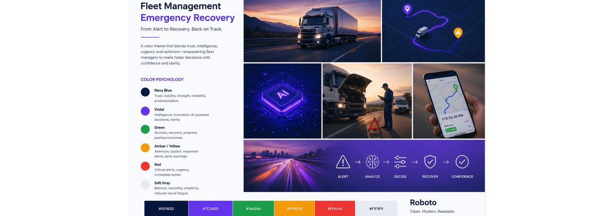
NAVITRAX in use
The dashboard brings together the fleet map, vehicles, drivers, maintenance, AI analytics, alerts, and reports — with updated ETAs and status updates at a glance.
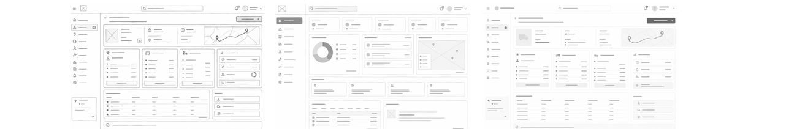
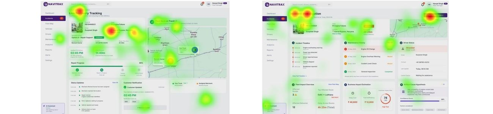
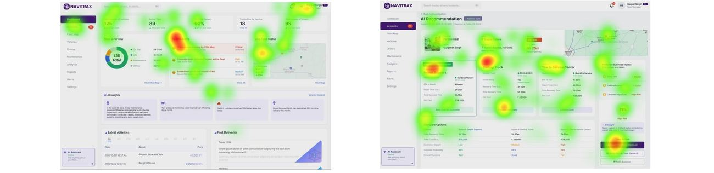
Design system
All UX work
AgeEase Transit: A system that aims at simplifying elderly travel experience while using public bus transportation.
A comprehensive transportation system tailored to the specific needs of the elderly population — ensuring ease, accessibility, and comfort during their travels on public buses.
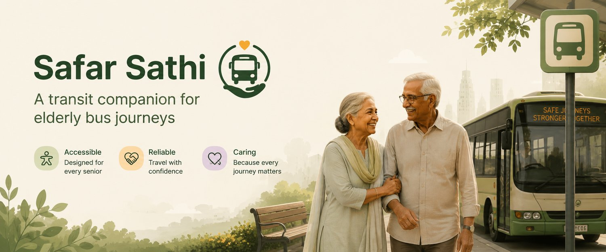
Problem statement
Despite advancements in transportation systems, the elderly face significant challenges while traveling in a public bus transport, ranging from accessibility issues to lack of tailored planning system that will help them in having a more enhanced traveling experience.
Who
Elderly citizens
What
Don't find bus public transport accessible
Where
Both urban and rural areas
When
Traveling alone
Why
Current system is not able to meet their requirements
Brainstorming
Mindmapping
System
Use of AI
Elderly needs
Social factors
Technological barriers
25 articles referred
Topics explored
Analysis
A person's ability to move about their environment is necessary for participation in civic, social, and community life, which is crucial for health, wellbeing, and quality of life. Age-related declines in physical and cognitive capacities can make older individuals feel unsafe and cause other issues that prevent them from traveling on their own.
What we heard
Limited seating availability: Senior citizens may have difficulty in finding a seat when boarding a bus, as most buses are often crowded and the priority seating areas are usually occupied.
Difficulty in boarding & disembarking: Senior citizens may find it difficult to board or disembark from a bus due to their limited mobility, making it difficult for them to climb up the bus steps or reach the aisle.
Difficulty in understanding the fare structure: Many senior citizens find it difficult to understand the fare structure of public buses, which can be confusing and overwhelming.
Difficulty in hearing the bus driver: Senior citizens may find it difficult to hear the bus driver due to their hearing loss and may miss important announcements or instructions.
Difficulty in standing for long periods: Senior citizens may have difficulty standing for long periods of time due to their limited mobility, which can be very uncomfortable and tiring.
Confusion about the timetables: Buses arrive late due to which people stand on the bus stops for a very long time. They aren't able to track the position of the buses which leads to confusion.
Conductor free service will be preferred: by the old people who cannot hear properly as there won't be any need for communication and interaction.
Three gaps in the current system
Information & Guidance Deficiency
The system lacks adequate tools or resources tailored to the specific needs of elderly travellers. There's a gap in providing real-time information about schedules, route changes, or accessibility features.
Safety & Security Concerns
The absence of dedicated safety features, such as emergency assistance, real-time monitoring, or guidance in case of unexpected situations, creates a significant gap.
Accessibility Challenges
There's limited provision for the elderly, such as inadequate seating, poor signage, or insufficient assistance for boarding and alighting.
Goals, deliverables & constraints
Project goals
Develop an AI-driven mobile application aimed at enhancing the travel experience of elderly users by providing personalized and accessible guidance for planning and executing public transportation bus journeys.
Project deliverables
A platform providing required information the elderly citizens by keeping in mind their needs.
Exclusions & constraints
The project excludes the development of physical hardware or modifications to transportation infrastructure. Constraints include technological limitations such as network connectivity and device compatibility.
Assumptions
Target audience possesses basic smartphone usage skills. Access to necessary transportation data for real-time updates and traffic analysis. Users are willing to provide necessary information for personalized suggestions.
Persona
Arvind Kumar
Occupation: Retired Govt. Officer
Location: Mumbai
Arvind is a retired govt. officer who lives with his wife in Mumbai. Every Friday and Saturday has Physiotherapy appointment at 11:00 AM for which he needs to travel. He also likes to attend social gathering and meet his friends and family. Due to eye and knee problems, he doesn't drive and thus depends on public transport for travelling.
Goals
- To reach the destination on time.
- To be able to climb the bus steps or rickshaw without hurting his knees.
- To be able to plan his trips according to the bus timetables.
- To stay updated about bus's current location.
Frustrations
- He doesn't like to always spend money on cab.
- He is not able to find a correct timetable of the buses in his area.
- He finds it difficult to travel in buses with his wife as getting in the bus is difficult and finding a vacant seat to sit is even more difficult.
- Buses don't come on time and thus he reaches for his therapy sessions late.
User journey
People involved: His wife · His family · Other passengers · other bus conductors · shopkeeper · Family
| Phases of journey | Leaving the house | Reaches the bus stop | Waits for the bus | Looks for shelter as it starts raining | Returns home |
|---|---|---|---|---|---|
| Actions | Starts his day by getting ready for the physio session. Leaves house on time and starts walking till the stop. | Reaches bus stop, but finds it very crowded. Stands in the queue. | Bus doesn't come on time, so waits for it. Looks for a place to sit due to leg pain. | Starts looking for shelter sue to a sudden rain. Walks slowly to a shelter with place to sit. | Inquired about the next bus. As the next one is after two hours, he returns home. |
| User thoughts | Excited for the physiotherapy session | Irritated due to the crowd | Tired as he has to stand and wait | Panics as it suddenly starts raining | Worried and tired |
| People involved | His wife; His family | Other passengers | Other passengers | other bus conductors; shopkeeper | Family |
| Planning | To plan the time for leaving from the house | To plan for a different time when the crowd will be less | To ask for different therapy session timings | To check the weather forecast | To plan the trip properly |
Physical experience
Opportunities
A platform with traffic analysis tools. A trip planning guide. A system with suggestions and instructions. A platform with real-time insights and suggestions.
Idea list & prioritisation
Idea list
Novelty–Feasibility graph
To login into the app and plan a trip
Information architecture
Plan a trip
- Enter locations
- Select preferences
- Personalized options
- Trip plans
Rides
- Upcoming ride
- Ride details
- Check details
- Bus tracking
Safar AI
- Smart voice search
- Suggestions
- Real-time insights
Notifications
- Alerts
- Bus delay
- Schedule changes
Profile
- Account
- Preferences
- Menu
Low fidelity prototype
Mid fidelity prototype
Safar Sathi
Company Name: Safar Sathi — A transit companion for seamless elderly journeys in public bus transportation.
Logo & icon size variations
Font palette
Poppins — Regular & Bold.
| Scale Category | Typeface | Weight | Size | Case | Spacing |
|---|---|---|---|---|---|
| H1 | Poppins | Light | 48 | Sentence | 1.5 |
| H2 | Poppins | Regular | 32 | Sentence | -0.5 |
| H3 | Poppins | Regular | 24 | Sentence | 0 |
| Subtitle 1 | Poppins | Regular | 18 | Sentence | 0.15 |
| Body 1 | Poppins | Regular | 16 | Sentence | 0.5 |
| Button | Poppins | Regular | 18 | Sentence | 1.25 |
| Dialog Title | Poppins | Bold | 14 | Sentence | 0.5 |
| Text Field Input Text | Poppins | Regular | 14 | Sentence | 0.5 |
| Text Field Label Text | Poppins | Regular | 12 | Sentence | 0.5 |
Buttons & bottom tab navigation
Buttons — types
Short Button, Long Buttons, Icon Button. Variants: Outlined, Filled.
Buttons — states
Disabled, Pressed, Enabled.
Buttons — specs
Corner radius — 10dp. Text alignment — Center-aligned. Font — Poppins bold.
Bottom tab navigation
States: Default, Hover, Enabled. Anatomy: Icon, Label, Active Indicator (Color), Inactive. Tabs: Planning, Rides, Notifications, Your Profile.
Colours, adjectives & typography
Primary colours
Secondary colours
Status colours
Neutral colours
Adjectives
Typography
Poppins — Regular & Bold.
High fidelity prototype
Interaction details
- Button animation
- Loading animation
- Checkbox animation
- Dropdown Animations
- Error Messages
- Success Messages
- Button Shadows
- Scrolling Animations
- Pull-to-Refresh Animation
- Rating/Star Animations
- Slider Interactions
- Location Permission Prompt
- Social Media Share Button
- Hover Effects
- Content Highlighting
- Response Messages
- Road to go back animation
- Text Highlighting
NAVITRAX
All UX work
AI Sales Assistant — an internal chatbot for Adobe's sales team
A conversational AI assistant that helps Adobe's internal sales team get to the right deal and account information fast — asking questions in natural language instead of navigating multiple tools. This is an NDA project, so the process is shown here while product visuals are kept limited.

The brief
An AI chatbot for Adobe's internal sales team — designed to surface deal and account information conversationally, reduce tool-switching, and give reps quick, reliable, source-backed answers.
UX process flow
Mind mapping
Mapping the problem space — dashboard features, AI capabilities, requirements, daily sales tasks, and user needs & pain points.
1. Sales Dashboard Features
2. AI Capabilities
3. Requirements
4. Daily Sales Tasks
5. User Needs & Pain Points
What we heard
Key inputs from requirements-gathering conversations with the sales team.
Sales teams needed quick access to relevant deal and account information without navigating multiple tools.
Asking questions in natural language will help retrieve clear and contextual answers about deals.
Concise deal summaries were needed to understand status, risks, and opportunities at a glance.
Reliable AI responses with clear source references were required to build confidence in the information provided.
From wireframes to hi-fi
Under NDA — representative frames shownLow-fidelity wireframes
Explored layout, hierarchy and the query-and-answer flow.
High-fidelity screens
The polished chat + insight experience.
Business impact
Even under NDA, the assistant delivered clear, qualitative wins for the sales team.
Increased user productivity
Reps spend less time hunting for information and more time selling.
Faster decision-making
Instant, source-backed answers help reps act with confidence.
Faster deliveries
Quicker prep and follow-ups keep deals moving without delays.
Reduced context-switching
One place for deal and account info, instead of jumping between tools.